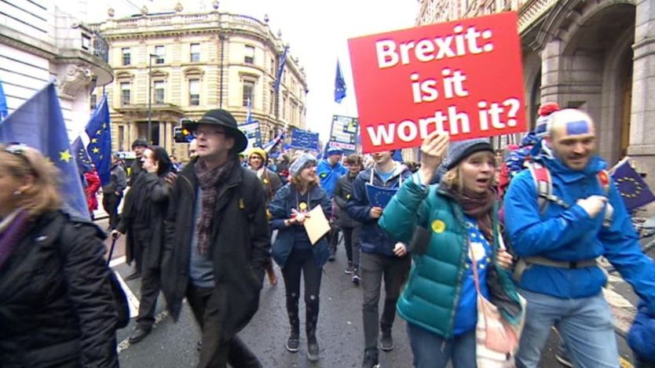

However, the decision to split from the European Union was not unanimous, there were many people unhappy with the outcome of the first referendum . This can be seen by the many protests that have occured since Brexit, and the ongoing protests in the United Kingdom. Many people believe Brexit is the wrong decision for Britain, and some are protesting day round, trying to reverse the decision. These protesters are hoping for another general election about Brexit, and that Britain’s majority will agree with them.
Multiple protests have happened since the day Brexit was decided. One of the biggest protests was a protest in London during September 2017, in which 50,000 people are estimated to have shown up in this monumental march. Protesters have carried flags, posters, and painted themselves to supp Parliament members like Patience Wheatcroft have also been fighting this war, and have support this protests and others. One of these slogans were “unite, rethink and reject Brexit.” Another protest happened in Leeds during March. In which about 2,000 people attended, sporting European Union and British flags along with other posters. The protest started at the Headrow and went on for two kilometers through the center of the city. The pro-Brexit Parliament responses to these protests have been similar, saying that there was already a democratic process to decide Brexit, and that the decision cannot be undone.